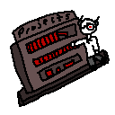
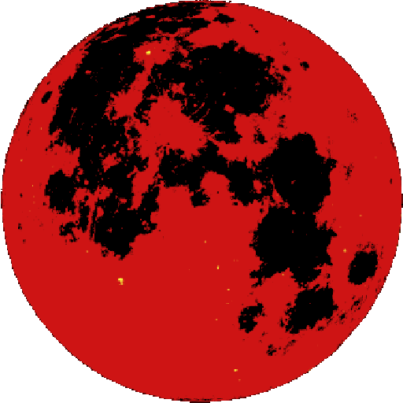
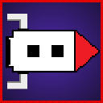
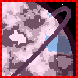

Workshop Beats:
This is a index of all my projects hosted on Github!


A music composing program modded from AbyssBox, which traces back as a mod of Beepbox, this is what I used to make all of my music, which I created to personally configure every aspect of the software.

A flappy-bird game where you fly a spaceship through an endless array of pipes. Controls are simple: Hold CLICK or FINGER to fly upwards, let go to fly down. Made with GameMaker. WARNING: I'm not very good at drawing, though honestly it doesn't take much to see that.

Inspired by Terranova, this program generates a new planet everyday, like how humanity might one day look down from the cockpits of spaceships on a thousand different worlds. Clicking will generate a random planet. Made with GameMaker, using FastNoiseLite by Jordan Peck to generate the perlin noise.